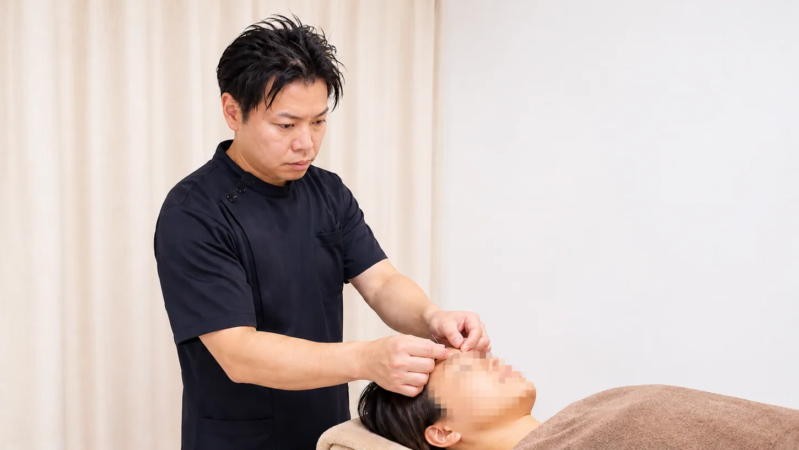
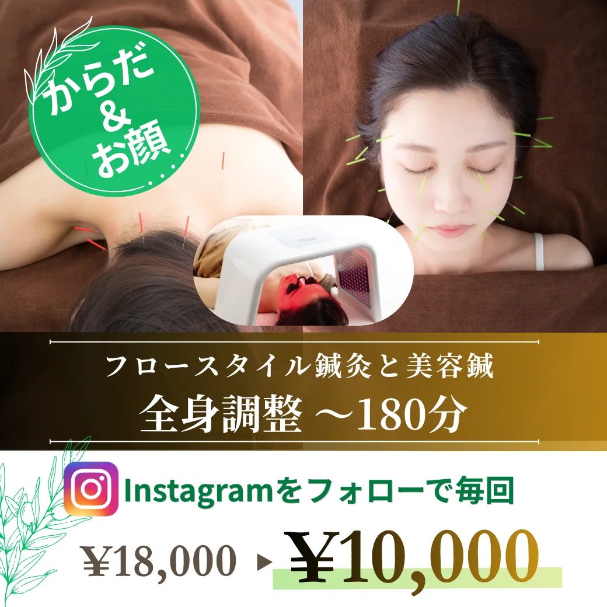

PERSONAL CARE
安心して、
身体をゆだねられる場所へ。
初めての鍼灸でも、安心してご相談いただけるように。施術内容やお身体の状態について、分かりやすくお伝えすることを心がけています。
女性専用完全予約制一人ひとりに合わせた施術
SAPPORO · SHIROISHI / WOMEN'S ACUPUNCTURE
検査や治療を受けても改善が感じられず、悩んでいませんか？FlowStyleでは、つらい場所だけでなく、身体全体の状態を東洋医学の視点から丁寧に見つめます。45年にわたり武道を通して身体を追究してきた鍼灸師・宏樹が、一回一回の施術に真剣に向き合います。
あなたのお悩みを、まずはお聞かせください。
女性専用 ／ 完全予約制 ／ 地下鉄白石駅近く

肩や腰の痛み、疲れやすさ、美容のお悩みまで。FlowStyleでは、症状のある場所だけでなく、身体全体のつながりを大切にしています。
お一人おひとりの状態をうかがい、落ち着いた空間で丁寧に施術します。
FlowStyleの施術について ↗
PERSONAL CARE
初めての鍼灸でも、安心してご相談いただけるように。施術内容やお身体の状態について、分かりやすくお伝えすることを心がけています。
02 / TREATMENTS

身体の不調に、全身から向き合う鍼灸。
お顔と身体のつながりを大切に。

身体の鍼灸と美容鍼を組み合わせて。
※上記はYouTubeチャンネル登録者限定料金です。その他のメニュー・通常料金は料金ページをご確認ください。
03 / ABOUT HIROKI
私は45年にわたり武道の修行を重ね、自分の身体と向き合ってきました。
「人を活かす技あり。」
すなわち、気。そして経絡の世界。
長年の武道経験と伝統東洋医学の知恵を融合させ、現在の私の鍼灸施術へとつながっています。
院長紹介を読む ↗ HIROKI / ACUPUNCTURIST
HIROKI / ACUPUNCTURIST04 / YOUR FIRST VISIT
FlowStyleは女性専用・完全予約制。
YouTube登録者の方に施術をご案内しています。
WE LOOK FORWARD TO SEEING YOU
〒003-0002 札幌市白石区東札幌2条6丁目7-5 日勝ビル東札幌203号室
営業時間・アクセスを見る →